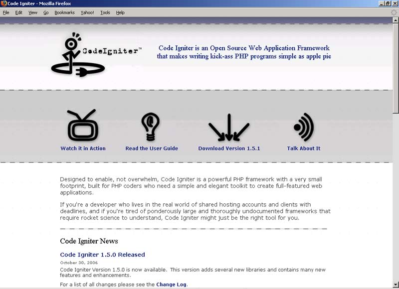
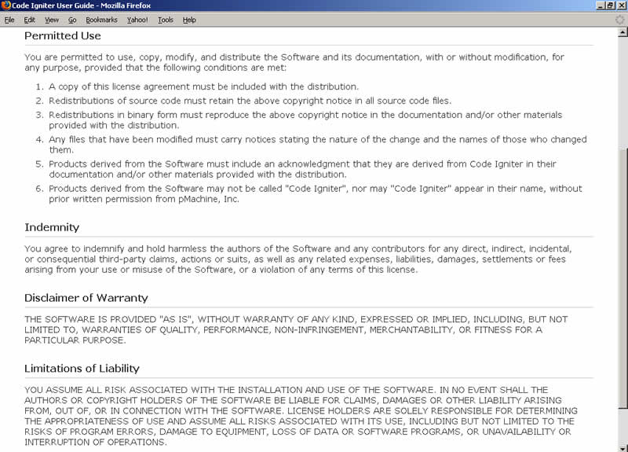

第一章 对 CodeIgniter 的介绍
大多数PHPer都想写出运行状态良好的应用程序，而且希望尽可能做得简单且不费事。这篇文章是有关 CodeIgniter 的（以下简称 CI），CI 是一个达成以上目标的框架。
如果你只是要达成一个最终的结果，而把中间所有的编码细节和复杂统统丢给一个框架，CI 是你最好的朋友。
CI 有很多优点：免费，轻量级，容易安装，它能使你的编程生涯变得很轻松。 这一章我们会告诉你：
- CI 能为你做什么？
- 什么是“框架”？CI 为什么能被称为框架？
- “开源”商业模式。
- CI 的某些不足（是的，它并不完美）。
1.1 CodeIgniter 能为你做什么？
如果你已经是一位 PHPer，开发过 PHP 应用，CodeIgniter 将会帮助你做得更好，更容易达成目标。CI 会减少你的代码量。你的脚本可读性也会更好，更容易升级。它会使你的网站结构更紧凑，代码更强健，如果没有很好地研究 CI 的源代码，你可能还无法察觉到它的强健。
对大多数兄弟来讲，你可能已经花了不少时间，系统地学习了 PHP、HTML 和 CSS，当然还有 MySQL 什么的，不过如果使用 CI，你只需要一些基本的 LAMP（WAMP）知识，你没有必要先成为一个专家才能使用 CI。你完全可以先借助于 CI 或别的什么框架软件，成为一个有生产力的 PHP 程序员，拿着高薪然后优雅地进一步学习 PHP 的中高级知识，直至成为一位真正的 PHP 骨灰级的人物。
下述情形，你最好不要使用CI：
- 你没有一点PHP和HTML的基本知识。
- 你想用最少的代码，快速简便的写一个基本的内容管理系统（CMS）（可以看看Expression Engine）。
- 你想写一个只有几个标准特性的简单的网站。
1.1.1 节省时间
CI 学习周期短，见效快。让我们试着评估一下相关的要素：
CI 如何减少代码量？
你真的可以减少很多工作量：敲击键盘的次数减少了，代码错误减少了，你只需要很少的时间调试代码。代码量减少还意味着你只需要较少的空间来存放应用程序。
举两个例子（稍后它们会被进一步分析，因此不用担心如何了解它们的工作原理！）
想象你正在写一个 MySQL 数据库查询。可能的代码如下：

$connection = mysql_connect("localhost","fred","12345"); mysql_select_db("websites", $connection); $result = mysql_query ("SELECT * FROM sites", $connection); while ($row = mysql_fetch_array($result, MYSQL_NUM)) { foreach ($row as $attribute) print "{$attribute[1]} "; }
现在看看 CI 如何处理同一个问题：
$this->load->database('websites'); $query = $this->db->get('sites'); foreach ($query->result() as $row) { print $row->url; }
比较字符数：前者 336，后者 112。
第二个例子，现在让我们想象你正在用 HTML 写一个数据输入窗口，你想要一个下拉输入框。下拉框中有三个选项。代码如下：
<select name="type"> <option value="1">www.this.com</option> <option value="2">www.that.com</option> <option value="3" selected>www.theother.com</option> </select>
CI 的写法和前例一样，因为它把相关内容放入一个数组，更容易由 PHP 进行处理：
$urlarray = array( '1' => 'www.this.com', '2' => 'www.that.com', '3' => 'www.theother.com', ); $variable .= form_dropdown('url', $urlarray, '3');
在 HTML 中，你需要输入 154 个字符；在 CI 中，只需要 128 个字符。
1.1.2 使你的网站更健壮
你不需要写很多代码，是因为 CI 提供了许多标准的功能，这些经过仔细推敲的框架内的代码，对安全性和输入进行了有效的校验和考虑。初学者往往没有足够的能力全面兼顾功能和安全。（这也是中高级程序员与新手之间能力差异的一个方面）
1.1.2.1 确保你的链接自动更新
设想你正在编写一个菜单页面，有许多超链接可重定向到其他页面。他们全部以传统的 HTML 格式编写：
后来，你决定转移网站到其他 URL。这意谓你必须仔细地去查找并修改代码中的每一处 URL，否则它们将无法正常工作。
CI 给你一个简单的函数，可以这样编写超链接：
CI 推荐你把你的 URL 放入一个配置文件中供你的脚本读取。CI 的 anchor 函数会自动从配置文件中提取相关 URL。因此，当你修改一个 URL 时，你只需要修改配置文件中的对应链接，然后所有超链接将自动更新。
1.1.2.2 防止对数据库的攻击：对表单输入的数据进行校验和处理
数据输入可能引发许多问题。因为 HTML 和数据库的限制，数据中总包含特定的符号―举例来说，省略符号和引号―可能导致你的数据库遭到攻击，最终得到你无法预料的结果。
解决方案是在把这些数据存入数据库前对这些数据进行相关处理。这样做会浪费一些系统时间，增加一些额外编码。
CI 的表单辅助函数会自动地完成这些工作。因此，当你编写一个输入框时：
CI 也隐式地执行下列校验函数：
function form_prep($str = '') { if ($str === '') { return ''; } $temp = '__TEMP_AMPERSANDS__'; // Replace entities to temporary markers so that // htmlspecialchars won't mess them up $str = preg_replace("/&#(\d+);/", "$temp\\1;", $str); $str = preg_replace("/&(\w+);/", "$temp\\1;", $str); $str = htmlspecialchars($str); // In case htmlspecialchars misses these. $str = str_replace(array("'", '"'), array("'", """), $str); // Decode the temp markers back to entities $str = preg_replace("/$temp(\d+);/","&#\\1;",$str); $str = preg_replace("/$temp(\w+);/","&\\1;",$str); return $str; }
上述函数捕获像“&”这样的特殊字符，以便在你的页面提交时不会造成混乱。你应该知道，有些字符会引起问题。
并不是所有的用户都会中规中矩的输入符合要求的信息，你也不可能知道使用浏览器输入信息的是什么人，他们在想什么，做什么。你可以使用 CI 来防止输入不符合要求的信息。当然，你大可不必知道 CI 是如何在幕后为你做到这一切的，你只需要简单地输入如下代码：
1.1.3 增强你的代码
CI 使你写代码更容易了。不像有些类库如 PEAR 等，集成比较困难，（有时候你会找不到支持 PEAR 的空间），CI 很容易集成，只要把它放入一个目录，它就能很好地工作。CI 所有代码的可读性好，也很健壮，推出前经过社区用户的认真测试，所以在你可以使用时，这些代码已经经历了很多考验。
让我们看两个例子。
1.1.3.1 发送 Email 和附件很简单
发送 Email 的功能实现起来比较复杂，但是，使用 CI 将使这件事变得很简单：
$this->load->library('email'); $this->email->from('your@your-site.com', 'Your Name'); $this->email->subject('Email Test'); $this->email->message('Testing the email class.'); $this->email->send();
实现发送 Email 的功能中有一些不容易解决的技术问题：比如设置文本自动换行（取消设置的话则可以保持长 URL 地址不被换行或截断）或发送附件。标准的 PHP 实现起来比较复杂，CI 简化了这些工作，它的 Email 类使得发送附件很简单：
$this->email->attach('/path/to/photo1.jpg');
CI 把内部的复杂部分悄悄地完成了，举例来说，实现了列举近百种不同附件的 MIME 类型的功能。所以它知道你的相片 photo1.jpg 是一个“image/jpeg”MIME 类型。因此它在你附件的适当位置填写必要的限制符号，它处理文本的换行，让你轻松标记出不希望出现换行的文本块。
1.1.3.2 压缩用户要下载的文件以加快下载速度
为了加快下载速度，常见的做法是在下载之前压缩下载文件。你可能不知道如何处理。但 CI 可以方便地让你用 4 行代码完成此功能：
$name = 'mydata1.txt'; $data = 'the contents of my file..........'; $this->zip->add_data($name, $data); $this->zip->archive('c:/my_backup.zip');
运行这些代码，你会在你的 C 盘根目录下找到一个压缩文件，解压后即为原始文件。
你网站的用户并不清楚你是如何简便实现这个功能的，但他们能体会到你的网站的下载速度很快，而你只用了数分种（而不是数小时）就实现了这个功能。
1.2 CodeIgniter 是什么？框架又是什么？
当发明计算机编程不久之后，便有人发现，这其中涉及到了太多的重复操作。之后，也许是 Ada Lovelace（人类历史上的首位程序员），又或许是 Alan Turning，决定将计算机程序模块化，从而使得片段程序代码可以重复使用。PHP 程序员们早已习惯了将需要重复使用的代码写在函数中，并将这些函数放在 include 文件里。
同样的，框架是为重用而发明的，存放在独立的文件中，用来简化重复操作的代码。
上面例子中连接数据库和编写 HTML 表单元素的工作都可以调用相关的 CI 函数来进行简化。
它超越了这一点。有很多种方法实现同样的功能；大多数的框架会让你按照它实现的方法来做。他们选择了一种方式来解决问题，所以你也必须要遵循这种方式。如果方式得当，编程便会轻松许多，反之则会事倍功半。
好的框架设计能实现需要的功能，而且尽可能地不互相牵连。一个好框架为你做出各种功能的实现，并且给你提供一步一步的编程指导。
提到框架时，就不能不提到著名的框架：Ruby on Rails。
Rails 做得相当成功，因为它籍由最少量的编码，提供简便快速的网站开发。本质上，它是一个结构和一组工具，专为使用 Ruby 语言的用户开发，允许你快速建立 Ruby 系统原型。它不是 Ruby 语言中唯一的框架，但它一定是最有开发效率和最有名的。另一方面，如果你已经花了很大功夫学习 PHP 的话，那么从 Ruby 重新开始又要重头学起。
为 PHP 开发的框架有很多个（大约 40 个），CI 只是其中之一。其它的还包括 Zend Framework、Cake、Trax 等。下列网址可以找到一个针对十种框架的简明图表分析：http://www.phpit.net/article/ten-different-php-frameworks/。
如果你访问上述网址中相关产品的官方网站，你将会注意到，每个论坛都有一个共同的热点，就是到底哪一个框架是最好的？事实似乎是每个都有它的长处，而且又都有自己的弱点。我的评估标准是：我很忙；因此框架应该节省我的时间，从中选择一个后，就坚持使用下去，因此就有了这本介绍 CI 的书。
1.3 关于开发者
Rick Ellis 开发了 CI，他曾经是一个摇滚音乐家，现在是一名程序员。Rick 还是 pMachine 公司的 CEO，该公司还有一个著名的内容管理系统叫做 Expression Engine。2006 年 1 月，他在他的 Blog 中写道（http://www.ellislab.com）：
“我花了数星期时间搜索和安装 PHP 框架，也被它们中的许多打击了一把，令我惊讶的是，我发现大多数框架存在以下问题：
- 文档不全或质量很差。
- 他们假定你水平很高，希望你能很容易地掌握使用方法。
- 他们是为那些有超级用户权限，或者有权修改服务器设置的人写的。
- 他们假定你偏爱命令行操作，事实上许多人无此爱好。
- 偏爱使用 PEAR 类库或其它开源类库。
- 模板语法过于复杂。
- 有的太笨重，有的又太简单。
- 大多数框架只能在 PHP 5 中运行，只有 5% 的使用率。
我还没有找到一个简单的 PHP 框架，健壮、易于使用、文档完整，包含建立一个完整应用需要的所有工具，并且有一个以浏览器为基础的接口，使用普通用户权限就能安装。没有别的原因，就是“市场需要”这个单一的原因促使我想开发这样一个框架产品。……”
结果是 CI 诞生了，作为一个业余时间开发的作品，Rick 慷慨地决定使它成为开源作品。在跑生意间隙，他保持经常更新 CI。他也创建了一个优秀的论坛，CI 使用者能提出问题并且分享开发心得。所有这些资源可从下列网址获得：http://www.codeigniter.com/。
他能实现自己的目标吗？相信你使用后会得出自己的结论……
1.4 “开源”商业模式
这类软件可能会有一些让人感到困惑的地方。如果你喜欢你的软件与昂贵的支持合同和“大公司”联系起来的话，那么 CI 并不适合你。（但是，你使用 PHP 能做什么呢？PHP 的用户都知道，支持和 PHP 软件的开发，一定程度上依赖于“社区”数百或数千用户的义务劳动。）
社区支持也存在一些问题。一致性和高质量不是“有保证的”―任何人都可以发表到论坛上，有时这些发表的内容是完全错误的。（注意：如果你去看一下一些昂贵的商业软件的授权细则，也是不对产品质量做出保证的。）但是对于“开源”产品而言，则必须自行细加推敲，而不能一味的相信论坛上的表象言论。如果你对研究新事物饶有兴致，那么 CI 非常适合你！
然而，所有明智的开发者都想知道把时间和精力投入到“一个人的团队”的产品中是否明智。Rick Ellis 利用业余时间编写这个项目，并从他在 pMachine 的同事 Paul Burdick 那得到了一些帮助。它是免费的。他不对维护或开发 CI 做出任何承诺。他可能回去继续做一个摇滚音乐家。
另一方面，下载 CI 之后，您下载的版本将继续工作。您不必依赖升级和修补程序。Rick 的代码写的非常好，只在以前有过几个严重的 BUG。如果 CI 工作正常，你便没有理由不继续使用 CI。到目前为止，我只发现了两个导致我的代码出错的情况，是这个框架而不是我的代码上的 BUG。（这两个 BUG 已被修复。）
CI 的网站是社区和论坛的门户。

1.5 CI 不能做什么
CI 有它本身的缺点。Rick 把 CI 定义为小型“轻量级”框架。（1.5 版压缩后只有 737 KB，可以在几秒种内下载完毕。Zend Framework 是 10 MB）CI 不能解决你所有的问题。但它能够：
- 使 PHP 编程更容易更快速。
- 帮助你架构网站或使你更容易地设计架构。
作为“轻量级”框架的一个结果是：它没有它的对手所具有的许多特征。像 Rails 因为它包含“脚手架（scaffolding）”和“代码生成器”，因此可以为你编写一些基本的脚本代码。因此，举例来说，一旦你建立了一个数据库，Rails 能自动生成简单的 CRUD 脚本（创建、读取、更新和删除）。
除此之外，Rails 还能让你编写“代码生成器”―自动地编写其他的简单脚本代码。Rails 社区中有许多这样的例子，因此你可以做很多智能化的东西。
CI 不这样做。（有基本的“脚手架（scaffolding）”功能―在 CI 中，脚手架只给开发者使用。就像在线手册描述的一样：“脚手架安全性不够……如要使用脚手架的话要确保在使用后立即关闭这个功能。在实际运行的网站上不要让脚手架处在工作状态。”说得很明确了吧？）
相反地 CI 专注于使基本的东西更容易。它处理的一些事物是：
- Session 管理和 Cookie。（见第六章）
- 数据库访问和查询。（见第四章）
- 创建 HTML 相关内容，如页面和表单，并验证表单项目。（见第五章）
- 测试。（第八章）
- Internet 通信，使用 FTP 或 XMLRPC。（第九章）
很熟悉吧？这些全部是基本的功能，如果你正在创建一个动态网站，你一定会做这些工作。CI 使这些工作更容易，而且使你的代码尽可能更好地工作。
1.6 许可协议
如果你正在构建一个商业应用程序，那么使用的任何软件的许可协议都将是至关重要的。（如果你要筹集风险投资，那么让 VC 的律师去对其进行详述）CI 没有这方面的问题。CI 的许可协议非常宽松，许可协议文件随 CI 一起在下载回来的压缩包里。
不像我所知道的某些商业软件，CI 的许可协议一屏就可以显示出来。下面的屏幕截图就是：

1.7 总结
如果你已经掌握了 PHP 的基本知识，并且想“聪明”地编写动态网站脚本，CodeIgniter 框架会使你的工作更容易，它帮助你：
- 节省时间。
- 使你的网站更健壮。
- 帮助你编写更复杂的系统。
CI 使你更好地享受编程乐趣，而不是一个干苦活的体力工。
有相当多的框架并不是为 PHP 语言开发的。他们都能减少重复编码的工作，使编写复杂程序变得更容易，并且建立一个合理的系统架构。
本书并不想制造框架大战。文章中已经解释了选择 CI 理由，让它为你节省更多的时间用在学习工作和生活中吧。
本书介绍了框架的一些主要特性，并对一些框架内部的运作进行了解释。
我通过对一个真实程序代码的分析，来展示 CI 是一个可以快速简便的用于艰巨环境中的重要工具。
请享用它！